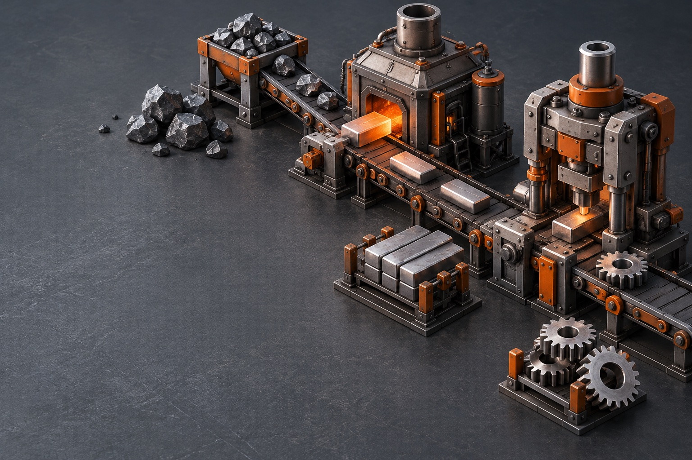
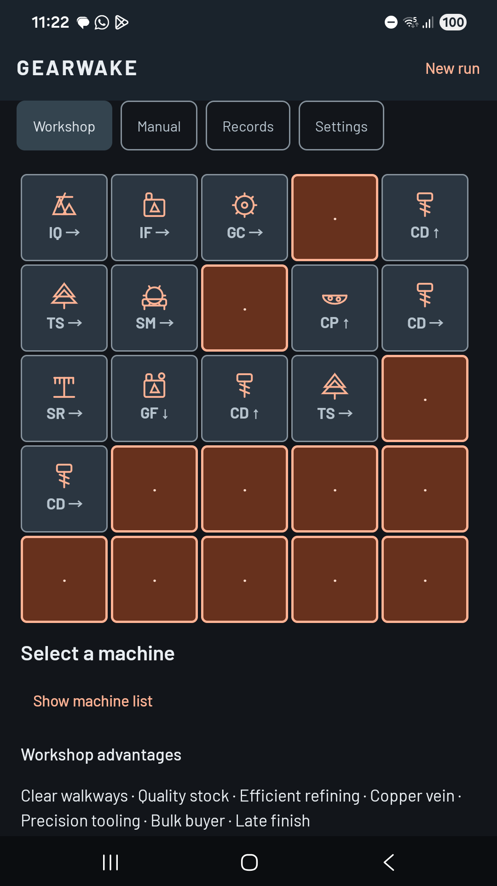
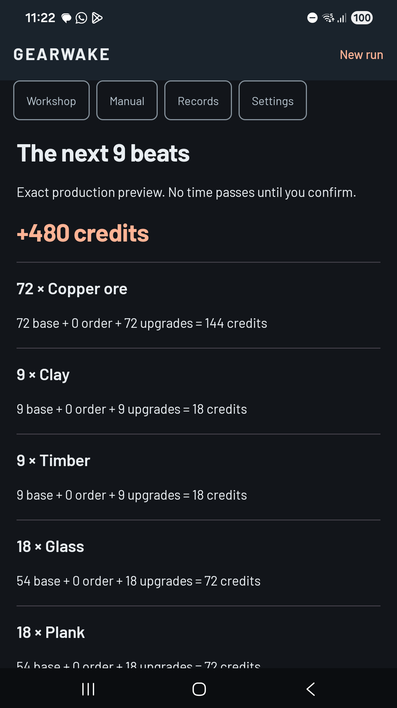
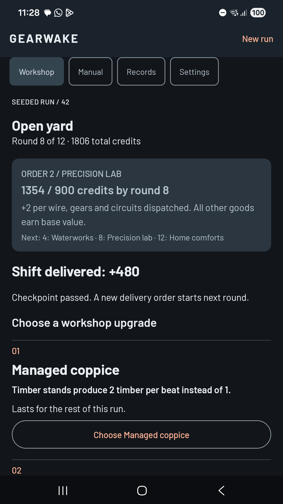
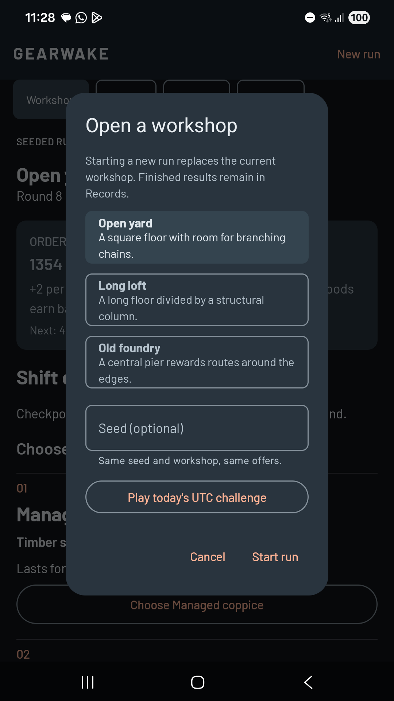

Choose what comes next.
Draft one of three machines. Place it, turn it or keep it on the shelf for a later chain.
Draft a compact factory, preview every shift and meet the next order. Twelve rounds of considered strategy.

A few machines can do a lot. Each arrow decides where the next piece goes.

Draft one of three machines. Place it, turn it or keep it on the shelf for a later chain.
Preview quantities and credits before dispatch. New inputs travel one beat at a time, so timing matters.
Reach targets at rounds four, eight and twelve. Choose upgrades that improve the workshop you actually built.
Three floor plans, 24 machines, 18 upgrades and 12 orders give every run a different shape.

See the exact next shift before committing.

Upgrades stay with you for the run.

Replay a seed or take the shared UTC daily start.
All gameplay is included. Save locally, export a complete backup and pick up where you left off.
Planned launch prices. Release availability and your final local price appear in Google Play. Android 8.0 or later.
No. Production advances only when you confirm a shift. There are no idle earnings or timed turns. Your run is saved after each action.
The UTC date selects a seed and workshop using versioned rules. Everyone on the same rules version gets the same start. You can share results, but there is no online leaderboard.
Yes. Export a complete backup in Settings, transfer the file yourself and restore it on the other phone. It includes the current run, placement undo and finished records. Automatic cloud backup is disabled.
Yes. Tap a machine and a destination, or choose a coordinate from the list. Sound and haptics are optional. Light and dark themes, large text and reduced motion are supported.